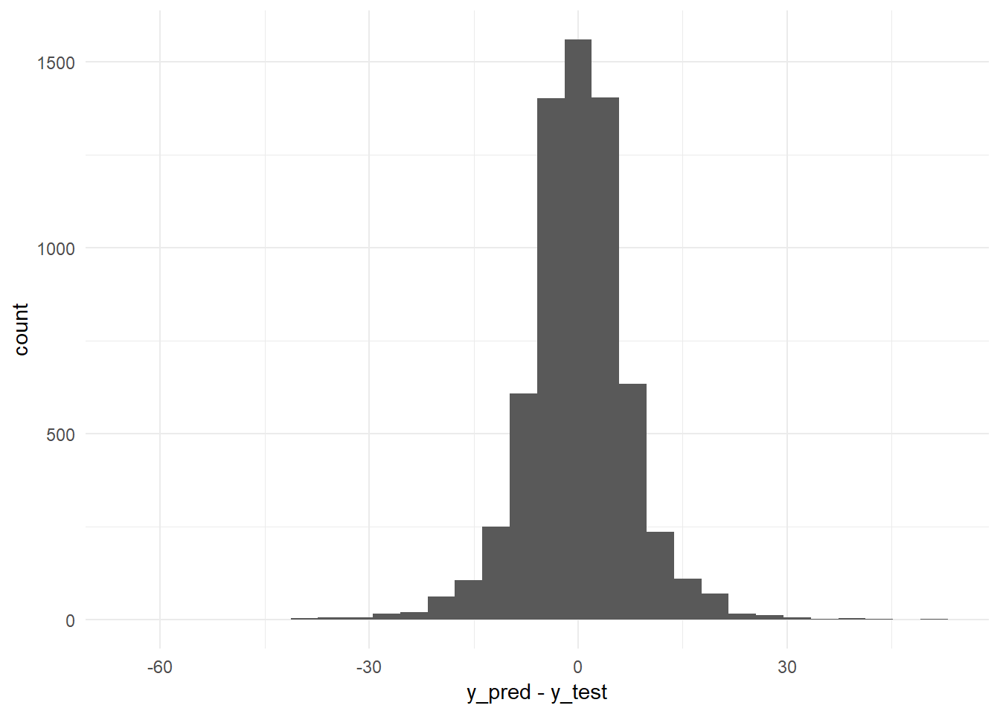
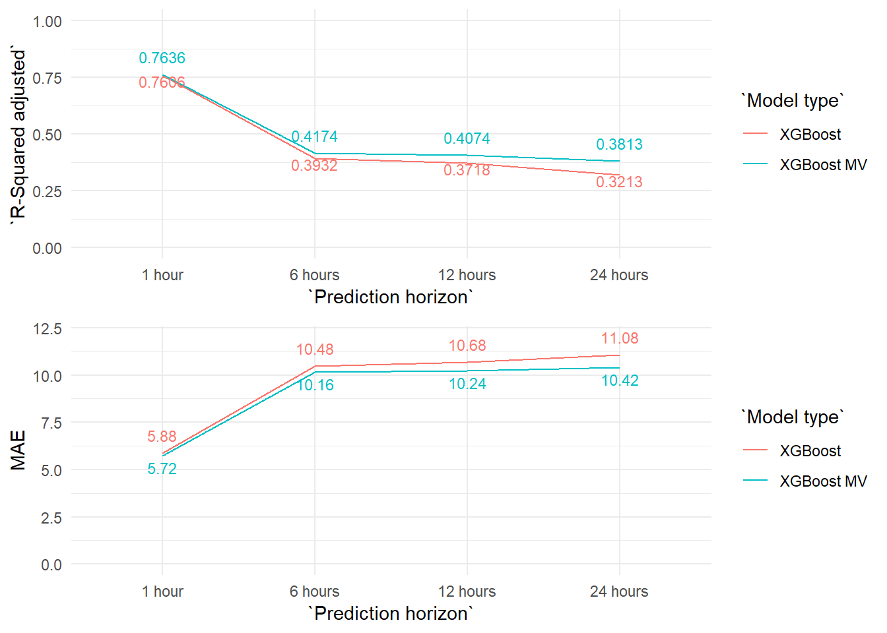

4 Forecasting Models
“Prediction is very difficult, especially if it’s about the future.” Nils Bohr, Nobel laureate in Physics
As I already explained in the Introduction, one of the objectives of this project is to develop forecasting models which allow us to predict the pollution levels in the city of Gijón some hours in advance.
Initially, I planned to create forecasting models for every monitoring station. But, as soon as I started work on the models I realized this goal was not very realistic. Therefore, I adjusted the scope of my project to just one station, the Constitución station and to only two pollutants, PM10 and NO2.
I chose the Constitución station because it is the only station with published weather data and we focused on these two pollutants because they are the pollutants with the biggest impact on public health.
Methodology.
We make a first approach to the problem with the ARIMA methodology. Then, with the reference of these results we try to improve the forecasts with machine learning methods.
I used R for the ARIMA models and to prepare the training and testing datasets for the Python models.
And I used Python, on the Google Colab platform, to create the machine learning methods.
All the R and Python scripts are saved in the github repository project:
- _10_1_train_test_PM10_AR_datasets.rmd
- _10_2_train_test_PM10_NO2_MULTIVAR_datasets.rmd
- 12_Forecasting_Models_ARIMA_PM10.rmd
- 21_Forecasting_Models_ML_PM10_AR.ipynb
- 22_Forecasting_Models_ML_PM10_MULTIVAR.ipynb
- 23_Forecasting_Models_ML_NO2_MULTIVAR.ipynb
The R scripts are included in this document too, in the R scripts section. The Python notebooks are not included in this document but the links to the original Google Colab notebooks are in the Python scripts section.
4.1 PM10 forecasts
ARIMA results
“I have seen the future and it is very much like the present, only longer.” Kehlog Albran, The Profit
R-markdown file “12_Forecasting_Models_ARIMA_PM10.rmd”
The code used for this section is in the rmarkdown file “12_Forecasting_Models_ARIMA_PM10.rmd” You can consult it in the section 8 “Forecasting models. ARIMA” of this document.
As a first step I created a very simple model to use as a base reference. This model takes the value from the previous hour as a prediction, forecasting just one hour ahead. Thus, the formula for this base model would be: Xt = Xt-1.
Then, I generated three different seasonal (frequency: 24 hours) ARIMA models with three different training periods (the ARIMA model parameters were selected automatically by the auto.arima function from the ‘forecast’ R package).
And I applied these three models to the testing period data (2017-01-01 - 2017-09-30) in order to obtain their prediction accuracy scores for the one hour ahead forecast.
Finally, I obtained the prediction accuracy scores for the ARIMA with the three years training period for the 6 hours, 12 hours and 24 hours ahead forecasts.
In the table below we can see the R-squared and the MAE obtained for each ARIMA model tested for the PM10 pollutant.
| Model type | Prediction horizon | Train period | R-Squared | MAE | Model detail |
|---|---|---|---|---|---|
| Auto regressive (Base model) | 1 hour | - | 0.5327 | 5.15 | PM10t = PM10(t-1) |
| ARIMA | 1 hour | 201610-201612 | 0.5975 | 4.88 | ARIMA(2,1,4)(0,0,2)[24] |
| ARIMA | 1 hour | 201401-201612 | 0.6015 | 4.84 | ARIMA(2,1,3)(0,0,2)[24] |
| ARIMA | 1 hour | 200901_201612 | 0.5966 | 4.88 | ARIMA(3,1,2)(0,0,2)[24] |
| ARIMA | 6 hours | 201401-201612 | 0.2118 | 7.12 | ARIMA(2,1,3)(0,0,2)[24] |
| ARIMA | 12 hours | 201401-201612 | 0.1108 | 7.64 | ARIMA(2,1,3)(0,0,2)[24] |
| ARIMA | 24 hours | 201401-201612 | 0.0138 | 10.90 | ARIMA(2,1,3)(0,0,2)[24] |
All the MAE and R-Squared showed in all the tables and the graphs are from applying the model to the testing period 2017-01-01 - 2017-09-30.
We are going to use the MAE (Mean Absolute Error) in order to compare the different models. We chose the MAE over the RMSE (Root Mean Square Error) because it is easier to interpret while also being more robust (less sensitive to outliers).
The base model (Xt = Xt-1) explains 53.3% of the variability of the data from the test period (R-squared: 0.5327) and it has a MAE (Mean Absolute Error) of 5.15.
And the ARIMA model with the best results is the one with the 3 years training period, which improves the Base model R-squaredin by almost 7 points , explaining 60.15% of the variation in the levels of PM10 (one hour ahead) and reduces the MAE to 4.84.
Either way, the differences between the three years training model and the other two are minimal. Three months of training data explains almost the same than three or nine years.
We can see this very clearly in the graph below, where we plot the monthly MAE of each model over the testing period.

MAE monthly evolution (Testing data. Period 2017-01-01 - 2017-09-30).
Forecasting 6, 12 and 24 hours ahead
The forecasting accuracy of any model decays as we try to forecast further in the future. Therefore, we used the ARIMA model to forecast PM10 values 6, 12 and 24 hours ahead, and we measured its forecasting precision. We can see the results in the table below.
| Model type | Prediction horizon | Train period | R-Squared | MAE | Model detail |
|---|---|---|---|---|---|
| ARIMA | 1 hour | 201401-201612 | 0.6015 | 4.84 | ARIMA(2,1,3)(0,0,2)[24] |
| ARIMA | 6 hours | 201401-201612 | 0.2118 | 7.12 | ARIMA(2,1,3)(0,0,2)[24] |
| ARIMA | 12 hours | 201401-201612 | 0.1108 | 7.64 | ARIMA(2,1,3)(0,0,2)[24] |
| ARIMA | 24 hours | 201401-201612 | 0.0138 | 10.90 | ARIMA(2,1,3)(0,0,2)[24] |
We plot the data on a graph in order to observe the differences more easily.

As we see in the graph the explanatory power of the model decays very quickly as we try to forecast further into the future. In fact, the 24 hours prediction hardly explains anything about the variation of the PM10 levels (although we could probably improve the 24 hours forecasting results by modifying the seasonal elements of the ARIMA model ‘P, D, Q’).
Machine Learning results

The code used for this section is in following Jupyter notebook files:
"21_Forecasting_Models_ML_PM10_AR.ipynb" Google Colab Notebook link “21_Forecasting_Models_ML_PM10_AR.ipynb”
“22_Forecasting_Models_ML_PM10_MULTIVAR.ipynb”
Google Colab Notebook link “21_Forecasting_Models_ML_PM10_AR.ipynb”
“23_Forecasting_Models_ML_NO2_MULTIVAR”
Google Colab Notebook link “21_Forecasting_Models_ML_PM10_AR.ipynb”
The training, testing and validations dataset were prepared previously with R:
Rmarkdown file “10_1_train_test_AR_datasets.rmd”
Rmarkdown file “10_2_train_test_PM10_NO2_MULTIVAR_datasets
Auto-regressive models
In this part we try to emulate the ARIMA results with different auto-regressive machine learning models. So, we are only including lagged values of the target variable as input variables. In this case lagged values of the PM10 pollutant.
We used Linear Regression, Random Forests and XGBoost algorithms, achieving the best results with the XGBoost models.
(We selected the lagged variables through a Linear Regression model, that is why it appears in the table 4 rows of results, 3 with the 33 initial variables and one with the final 13 variables selected.)
| Model type | Number of variables | Prediction horizon | Train period | R-Squared adjusted | MAE |
|---|---|---|---|---|---|
| Linear regression | 33 | 1 hour | 201610-201612 | 0.5794 | 4.94 |
| Linear regression | 33 | 1 hour | 201401-201612 | 0.5944 | 4.82 |
| Linear regression | 33 | 1 hour | 200901-201612 | 0.5880 | 4.87 |
| Linear regression | 13 | 1 hour | 201401-201612 | 0.5932 | 4.84 |
| Random Forest Regressor | 13 | 1 hour | 201610-201612 | 0.5724 | 4.93 |
| Random Forest Regressor | 13 | 1 hour | 201401-201612 | 0.5873 | 4.90 |
| Random Forest Regressor | 13 | 1 hour | 200901-201612 | 0.5741 | 5.00 |
| XGBoost | 13 | 1 hour | 201610-201612 | 0.5779 | 4.92 |
| XGBoost | 13 | 1 hour | 201401-201612 | 0.5970 | 4.81 |
| XGBoost | 13 | 1 hour | 200901-201612 | 0.5905 | 4.86 |
| XGBoost | 13 | 6 hours | 201401-201612 | 0.2400 | 6.93 |
| XGBoost | 13 | 12 hours | 201401-201612 | 0.1474 | 7.46 |
| XGBoost | 13 | 24 hours | 201401-201612 | 0.0514 | 7.98 |
And as with the ARIMA models we got the smallest MAE using the three years period for the training dataset (2014-01-01 - 2016-12-31).
| Model type | Number of variables | Prediction horizon | Train period | R-Squared adjusted | MAE |
|---|---|---|---|---|---|
| Linear regression | 13 | 1 hour | 201401-201612 | 0.5932 | 4.84 |
| Random Forest Regressor | 13 | 1 hour | 201401-201612 | 0.5873 | 4.90 |
| XGBoost | 13 | 1 hour | 201401-201612 | 0.5970 | 4.81 |
Nevertheless, the results are very similar to the ARIMA ones for the one hour forecasts.
But as we increase the forecast horizon the XGBoost obtains better results than the ARIMA model. 
Multi-variate models
And finally, we added other variables to try to improve our forecasting model. In this part we used the XGBoost algorithm exclusively, because so far it is the algorithm which showed the best performance. And for the same reason we will use the three years training period (2014-01-01).
We used two different kinds of variables:
More lagged values of numerical variables, such as weather measurements or other pollutants levels.
Categorical variables related to information about the target that we can anticipate, such as the hour of the day or the type of day (working days versus non-working days).
We can see the results in the table below.
| Model type | Prediction horizon | Train period | R-Squared adjusted | MAE |
|---|---|---|---|---|
| XGBoost MV | 1 hour | 201401-201612 | 0.6135 | 4.71 |
| XGBoost MV | 6 hours | 201401-201612 | 0.2614 | 6.76 |
| XGBoost MV | 12 hours | 201401-201612 | 0.1556 | 7.38 |
| XGBoost MV | 24 hours | 201401-201612 | 0.0807 | 7.83 |
We compare the results of all the models graphically. The XGBoost multivariate models slightly increase the results of the XGBoost auto regressive ones, particularly at the prediction horizon of 24 hours. But in the end, the explanatory power and the errors of the models are very similar.
Maybe the contribution from the added variables in the multivariate models are so limited because a big part of this information is already included in the lagged values of the PM10 variable.
In order to improve the model, apart from a better feature engineering of the current variables or the inclusion of new lagged variables (for example: lagged values from other monitoring stations) we think the inclusion of weather forecasts would have a great effect on these pollution predictions. We would, thus, be including future conditions that would help to better anticipate PM10 levels (the wind and the rain have a great influence in the accumulation of air pollutants).
4.2 NO2 forecasts
For the NO2 forecasts we skip the ARIMA, Linear Regression and Random Forest models to use the XGBoost algorithm directly, which is the one with better results so far. These are the auto regressive XGBoost models results (Testing data scores. Period: 2017-01-01 - 2017-09-30):
| Model type | Number of variables | Prediction horizon | Train period | R-Squared adjusted | MAE |
|---|---|---|---|---|---|
| XGBoost | 16 | 1 hour | 201401-201612 | 0.7606 | 5.88 |
| XGBoost | 16 | 6 hours | 201401-201612 | 0.3932 | 10.48 |
| XGBoost | 16 | 12 hours | 201401-201612 | 0.3718 | 10.68 |
| XGBoost | 16 | 24 hours | 201401-201612 | 0.3213 | 11.08 |
And these are the results for the XGBoost multivariate models (Testing data scores. Period: 2017-01-01 - 2017-09-30):
| Model type | Prediction horizon | Train period | R-Squared adjusted | MAE |
|---|---|---|---|---|
| XGBoost MV | 1 hour | 201401-201612 | 0.7636 | 5.72 |
| XGBoost MV | 6 hours | 201401-201612 | 0.4174 | 10.16 |
| XGBoost MV | 12 hours | 201401-201612 | 0.4074 | 10.24 |
| XGBoost MV | 24 hours | 201401-201612 | 0.3813 | 10.42 |
The differences between the auto regressive and multivariate coincide largely with what we have seen with the PM10 models. The differences are very limited and grow slightly as we increase the prediction horizon.

But the most important difference with the previous PM10 models is that the NO2 models make much more precise forecasts in general. And this difference in precission grows as we increase the prediction horizon. We can see this effect very clearly in the next graph.
Why these differences? Apart from the possible differences derived from a better or worse variable selection, featuring engineering, etc. we think the key to explain these differences lies on the own behaviour of each variable.
Down below we can see the hourly levels of each pollutant during January 2017. We can clearly see how the hourly patterns of the PM10 levels (first grid of graphs)are much more erratic than the NO2 (second grid), which has a very recognisible pattern.
The Constitución monitoring station is an urban station, very close to one of the busiest traffic areas in the city of Gijón. Therefore, the most of the NO2 measured at this station comes from the transformation of NO emitted by cars engines. The traffic has a very regular pattern, so it is natural than the NO2 measured by this station follows very clear patterns. Meanwhile, the PM10 levels, although they partly depend on the traffic too, has more variate sources and precursors, such as the industrial plants situated to the west of the city.
In short, we are achieving better NO2 forecasts because it is a pollutant which is much easier to forecast than the PM10.